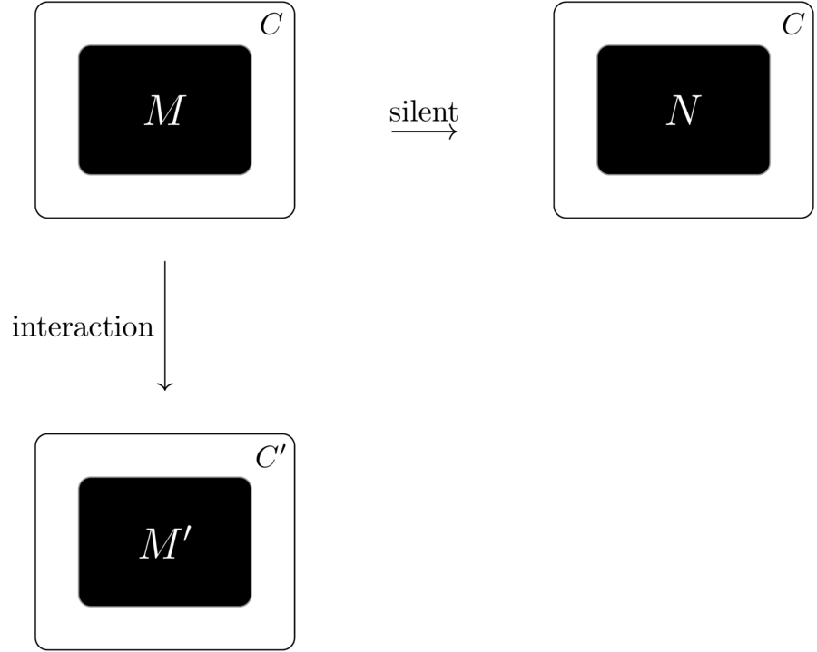

This talk is about the relational semantics of the λ-calculus.
Relational semantics grew from Girard’s quantitative semantics (1988) and can be seen as a simple model of linear logic (Girard, 1987).
It is easiest to present as a system of non-idempotent intersection types (multi types) (De Carvalho, 2018): the denotation of a term is the set of its typings \[ x_1: \mu_1, \ldots, x_n:\mu_n \vdash M: \alpha \]
\[ \frac{}{x:[\alpha] \vdash x:\alpha}~\text{ax} \quad\quad \frac{\Gamma_i \vdash M: \alpha_i~~(i \in I~\text{finite})}{\uplus_{i \in I}\Gamma_i \vdash M: [\alpha_i]_{i \in I}}~\text{many} \]
\[ \frac{\Gamma, x:\mu \vdash M: \alpha}{\Gamma \vdash \lambda x.M: \mu \rightarrow \alpha}~\lambda \quad\quad \frac{\Gamma \vdash M: \mu \rightarrow \alpha \quad \Delta \vdash N: \mu} {\Gamma \uplus \Delta \vdash MN : \alpha}~\text{@} \]
A term may have many types: types are elements of the model, not traditional types.
This model has quantitative content: the multisets count something. But what?
They keep track of how many times an argument is used: for example we can type \[ f: [[\alpha] \rightarrow [\alpha'] \rightarrow \alpha] \vdash \lambda x. f~x~x:[\alpha, \alpha']\rightarrow \alpha. \]
The many rule means that these multiplicities are also seen in derivations. \[ \cfrac{\cfrac{\vdots}{f: [[\alpha] \rightarrow [\alpha'] \rightarrow \alpha] \vdash \lambda x. f~x~x:[\alpha, \alpha']\rightarrow \alpha}\quad \cfrac{\vdash M: \alpha \quad \vdash M: \alpha'}{\vdash M: [\alpha,\alpha']}}{f: [[\alpha] \rightarrow [\alpha'] \rightarrow \alpha]\vdash (\lambda x. f~x~x) M: \alpha }~@ \] The function uses \(M\) twice, so we need two derivations of \(M\).
Though substitution may duplicate or discard terms, it does not duplicate or discard their type derivations.
\(M\) has a type if and only if \(M\) has a head normal form; and the number of @-rules in a derivation bounds the length of the head reduction.
The restriction to head reduction is essential: \(x \Omega \rightarrow_\beta x \Omega\), but this is never a head reduction.
We can also compare λ-terms by means of their Böhm trees.
\[ M ::= x \mid MM \mid \lambda x.M \quad\quad (\lambda x.M)N \rightarrow_\beta M[N/x] \]
If \(M\rightarrow^* \lambda x_{1}\ldots x_{n}.y\,M_{1}\cdots M_{k}\):
Otherwise, \(M\) is head diverging: \( \BT{M} = \bot.\)
We also define two extensions:
\[ x \not \sqsubseteq_{\mathbf{B}} \lambda y. xy \quad \lambda y. xy \not \sqsubseteq_{\mathbf{B}} x \] \[ x \leBconv \lambda y. xy \quad \lambda y. xy \leBconv x \] \[ x \not \leBred \lambda y. xy \quad \lambda y. xy \leBred x \]
(Hyland, Wadsworth) Taking the contextual preorder that observes head normal forms, \[ M \lectx N \quad\Leftrightarrow\quad M \leBconv N \] and both coincide with the order induced by Scott’s \(D_\infty\) models.
\[ M \not \leBconv N \Rightarrow \exists C[-]. C[M] \rightarrow^*\mathsf{hnf}~\text{but}~C[N]\not\rightarrow^*\mathsf{hnf} \]
Using adequacy (typable iff head normalising) and compositionality: \[ \text{if}~\sem{M} \subseteq \sem{N}~\text{then for all}~C[-]. C[M]\rightarrow^* \mathsf{hnf} \Rightarrow C[N]\rightarrow^* \mathsf{hnf}\] i.e. \(M \lectx N\), so by Hyland–Wadsworth the denotational order implies the extensional Böhm-tree order \(M \leBconv N\).
The converse is not true. For example \(x \leBconv \lambda y. x y \) but \[ x : [a] \vdash x: a \quad\quad x : [a] \not\vdash \lambda y. x y: a \quad \]
In fact thanks to Breuvart, Manzonetto and Ruoppolo (2018) we know that \[ \sem{M} \subseteq \sem{N} \quad\Leftrightarrow\quad M \leBred N \]
But this is qualitative. Where have the quantities gone?
Can we recover a contextual ordering by paying attention to quantities?
Sands (1999) introduced the idea of a contextual improvement order.
Idea: observe not just what happens but how long it takes.
For example: observe the length of a head-reduction sequence.
We write \( M \Downarrow_h^k \) if \(M\) reduces to hnf in \(k\) head reduction steps.
Then we can define improvement: \(M \lesands N \) iff \[ \text{for all contexts}~C[-]. C[M]\Downarrow_h^k \Rightarrow \exists k'\leq k. C[N]\Downarrow_h^{k'} \]
\(N\) does the same things as \(M\) in fewer steps.
\[ (\lambda x.x)\,y \Downarrow_h^1 \qquad\qquad y \Downarrow_h^0 \] so \(y \not\lesands (\lambda x.x)\,y\), although they are β-equal.
An order that counts reductions cannot be the order induced by a denotational semantics that is sound for β-reduction.
(There are very few denotational models of improvement orders as a result. One exception is Ghica’s slot games (2005), which expose every internal step through a global counter.)
So our plan to use this idea to capture the relational order must fail. Yet here we are…

For λ-terms \(M, N\), the following are equivalent:
A quantitative Hyland–Wadsworth theorem: the relational model’s preorder is an improvement order, counting interactions.
Accattoli et al. (2025): colour every abstraction and application black \(\bullet\) or white \(\circ\).
Intuition: the program (player) is black, the context (opponent) is white. The calculus is entirely symmetric. \[ M, N ::= x \mid \lambda_\bullet x. M \mid \lambda_\circ x. M \mid M \bullet N \mid M \circ N \]
Silent reductions (colours match): \[ (\lambda_\bullet x.M)\bullet N \rightarrow M[N/x] \quad (\lambda_\circ x.M)\circ N \rightarrow M[N/x] \]
Interaction reductions (colours differ): \[ (\lambda_\bullet x.M)\circ N \stackrel{\interact}{\rightarrow} M[N/x] \quad (\lambda_\circ x.M)\bullet N \stackrel{\interact}{\rightarrow} M[N/x] \]
We can embed the ordinary λ-calculus by painting everything \(\bullet\). Every reduction is then silent.
The fun starts when we embed a \(\bullet\)-painted term in a \(\circ\)-painted context.
One interaction step. Only the steps where black meets white are counted.
Two versions of the identity function in the context \(- \circ (\lambda_\circ x.x) \).
η-expansion increases the number of interaction steps, and also changes the colouring of the result: \(\lambda_\circ x.x\) versus \(\lambda_\bullet y.y\).
We observe the number of interaction steps in a head-reduction sequence.
We write \( M \Downarrow_{\interact}^k \) if \(M\) reduces to hnf with \(k\) head interaction steps (silent steps are free).
Then we define interaction improvement: \(M \leimp N \) iff \[ \text{for all checkers contexts}~C[-]. C[M]\Downarrow_{\interact}^k \Rightarrow \exists k'\leq k. C[N]\Downarrow_{\interact}^{k'} \]
For λ-terms, \(M \leimp N\) means \(M^\bullet \leimp N^\bullet\) (paint them black; quantify over all checkers contexts).
The interaction preorder \(\leint\) (Accattoli et al., 2025) asks instead for exactly the same \(k\).
\[ (\lambda_\bullet x.x) \circ (\lambda_\circ x.x) \;\leimp\; \lambda_\circ x.x \qquad\text{but}\qquad (\lambda_\bullet x.x) \circ (\lambda_\circ x.x) \;\not\leint\; \lambda_\circ x.x \] Same head normal form, but the left-hand side needs one more interaction to reach it.
For a regular λ-term painted \(\bullet\) throughout, all steps are silent: β-equivalent terms are equivalent in \(\leimp\).
But \(\circ\)-painted contexts distinguish η-convertible terms, and η-reduction delivers improvement: \[ \lambda_\bullet x. \lambda_\bullet y. x \bullet y \;\leimp\; \lambda_\bullet x. x \qquad \lambda_\bullet x. x \;\not\leimp\; \lambda_\bullet x. \lambda_\bullet y. x \bullet y \]
The first of these was only a conjecture in Accattoli et al. (2025): it is a corollary of our main theorem.
If \(M \leimp N\) then \(M \leBred N\) (and hence \(\sem{M} \subseteq \sem{N}\)).
Proof:
The separating contexts are white applicative head contexts: these alone suffice to determine \(\leimp\).
To complete the picture, we use a refined relational model.
We annotate the types:
and the judgements: \[ \Gamma \vdash^k M : \alpha \]
Judgement annotations track the number of interaction applications: \[ \frac{}{x:[\alpha] \vdash^0 x:\alpha}~\text{ax} \quad\quad \frac{\Gamma_i \vdash^{k_i} M: \alpha_i~~(i \in I~\text{finite})}{\uplus_{i \in I}\Gamma_i \vdash^{\sum_i k_i} M: [\alpha_i]_{i \in I}}~\text{many} \]
\[ \frac{\Gamma, x:\mu \vdash^k M: \alpha}{\Gamma \vdash^k \lambda_{\bullet/\circ} x.M: \mu \stackrel{\bullet/\circ}{\rightarrow} \alpha}~\lambda \]
\[ \frac{\Gamma \vdash^k M: \mu \stackrel{\bullet}{\rightarrow} \alpha \quad \Delta \vdash^{k'} N: \mu} {\Gamma \uplus \Delta \vdash^{k+k'} M \bullet N : \alpha}~\text{@-silent} \]
\[ \frac{\Gamma \vdash^k M: \mu \stackrel{\bullet}{\rightarrow} \alpha \quad \Delta \vdash^{k'} N: \mu} {\Gamma \uplus \Delta \vdash^{k+k'+1} M \circ N : \alpha}~\text{@-interact} \] (plus rules exchanging \(\bullet\) with \(\circ\)).
The annotated semantics \(\csem{M}\) is the set of typings \((\Gamma, k, \alpha)\) with \(\Gamma \vdash^k M : \alpha\).
Erasing colours and indices gives back the relational model \(\sem{M}\).
With the same techniques as for the regular relational semantics, we can prove
For any term \(M\) of the checkers calculus:
As a corollary, \[ \text{if}~\csem{M} \subseteq \csem{N}~\text{then}~M \leimp N. \]
But inclusion of \(\csem{-}\) is still not what we want: it fails for \(\lambda_\bullet x. \lambda_\bullet y. x \bullet y \leimp \lambda_\bullet x. x\).
The black η-expansion of \(x\), with a white arrow for \(x\): \[ \cfrac{ \cfrac{}{x:[[] \stackrel{\circ}{\rightarrow} a] \vdash^0 x : [] \stackrel{\circ}{\rightarrow} a}~\text{ax} \quad \cfrac{}{\vdash^0 y : []}~\text{many} }{ \cfrac{x:[[] \stackrel{\circ}{\rightarrow} a] \vdash^1 x \bullet y : a} {x:[[] \stackrel{\circ}{\rightarrow} a] \vdash^1 \lambda_\bullet y. x \bullet y : [] \stackrel{\bullet}{\rightarrow} a}~\lambda }~\text{@-interact} \]
\(x\) itself does not have this typing: the axiom forces both arrows to be the same colour. But it has \[ x:[[] \stackrel{\circ}{\rightarrow} a] \vdash^0 x : [] \stackrel{\circ}{\rightarrow} a \] which is whiter (one arrow changed \(\bullet \mapsto \circ\)) and cheaper (\(0 < 1\)).
In the plain relational semantics we have the following typings for identity-like terms \[ \vdash \lambda x. x: [[a] \rightarrow a] \rightarrow [a] \rightarrow a \] \[ \vdash \lambda x. \lambda y. x y: [[a] \rightarrow a] \rightarrow [a] \rightarrow a \]
In the checkers calculus we have these annotations: \[ \vdash^0 \lambda_\bullet x. x : [[a] \stackrel{\bullet}{\rightarrow} a] \stackrel{\bullet}{\rightarrow} [a] \stackrel{\bullet}{\rightarrow} a \quad\quad \vdash^0 \lambda_\bullet x. \lambda_\bullet y. x \bullet y : [[a] \stackrel{\bullet}{\rightarrow} a] \stackrel{\bullet}{\rightarrow} [a] \stackrel{\bullet}{\rightarrow} a \] \[ \vdash^0 \lambda_\bullet x. x : [[a] \stackrel{\circ}{\rightarrow} a] \stackrel{\bullet}{\rightarrow} [a] \stackrel{\circ}{\rightarrow} a \quad\quad \vdash^1 \lambda_\bullet x. \lambda_\bullet y. x \bullet y : [[a] \stackrel{\circ}{\rightarrow} a] \stackrel{\bullet}{\rightarrow} [a] \stackrel{\bullet}{\rightarrow} a \] Key insight: η-reductions lead to typings that are either the same, or “whiter and cheaper”.
We write \(\alpha \leq_k^+ \alpha'\) if \(\alpha\) can be obtained from \(\alpha'\) by changing \(k\) positively occurring instances of \(\bullet\) to \(\circ\).
We write \(\alpha \leq_k^- \alpha'\) if \(\alpha\) can be obtained from \(\alpha'\) by changing \(k\) negatively occurring instances of \(\bullet\) to \(\circ\).
For example \[ [a] \stackrel{\circ}{\rightarrow} a \leq_1^+ [a] \stackrel{\bullet}{\rightarrow} a \] \[ [[a] \stackrel{\circ}{\rightarrow} a] \stackrel{\bullet}{\rightarrow} a \leq_1^- [[a] \stackrel{\bullet}{\rightarrow} a] \stackrel{\bullet}{\rightarrow} a \]
For closed checkers terms \(M\), \(N\), we write \(M \lepwc N\) if and only if
if \(\vdash^k M: \alpha\) then there exist \(\vdash^{k'} N:\alpha'\) and \(d\) such that \(\alpha' \leq_d^+ \alpha\) and \(k'+d \leq k.\)
The typing of \(N\) is \(d\)-whiter and at least \(d\)-cheaper.
(The definition extends to terms with free variables in a natural way.)
The observations we made about η-expansions of variables extend to whole Böhm trees:
If \(M \leBred N\) then \(M \lepwc N\).
This is proved by a detailed analysis of \(\leBred\) on Böhm trees.
It remains to prove that \(M \lepwc N\) implies \(M \leimp N\).
Compositionality is the key!
Suppose the \(\lepwc\) ordering is preserved by term constructors, that is, \(M \lepwc N\) implies \(C[M] \lepwc C[N]\) for any context \(C[-]\).
If \(C[M] \Downarrow_{\interact}^k\) then \(C[M]\) has a typing \(\vdash^k C[M] : \alpha\).
By \(\lepwc\) we obtain a typing \(\vdash^{k'} C[N]:\alpha'\) with \(k' \leq k\).
Hence \(C[N]\Downarrow_{\interact}^{k''}\) for some \(k'' \leq k' \leq k\).
So \(M \leimp N\).
But is \(\lepwc\) compositional?
Consider an application \[ \frac{\vdash^k M: [\alpha] \stackrel{\bullet}{\rightarrow} \beta \quad \vdash^{k'} N: \alpha}{\vdash^{k+k'} M \bullet N: \beta} \]
If we replace \(N\) by an improved (whiter-cheaper) term \[ \vdash^{k''} N': \alpha' \] where \(\alpha' \leq_d^+ \alpha\), we can no longer apply the rule.
We’d like to find a new typing for \(M\) of the form \[ \vdash^{l} M: [\alpha'] \stackrel{\bullet}{\rightarrow} \beta \]
Suppose \(\vdash^k M : \alpha\) and \(\alpha' \leq_1^- \alpha\). Then there exists a typing \[ \vdash^{k'} M: \alpha'' \] such that one of the following holds:
Whitening an input either forces an output to whiten, or is absorbed by an interaction step appearing or disappearing.
Let \[ M \triangleq \lambda_\bullet x.x \bullet \lambda_\bullet z.y \bullet z \]
Consider the \(\bullet\)-application of \[ y:[\mu \stackrel{\circ}{\to} a] \vdash^1 M: [[\mu \stackrel{\bullet}{\to} a] \stackrel{\bullet}{\to} a'] \stackrel{\bullet}{\to} a' \quad \text{to} \quad \vdash^k N : [[\mu \stackrel{\bullet}{\to} a] \stackrel{\bullet}{\to} a'] \] The overall type is \[ y:[\mu \stackrel{\circ}{\to} a] \vdash^{k+1} M\bullet N : a' \]
Eta-reducing \(M\) gives a whiter-cheaper typing: \[ y:[\mu \stackrel{\circ}{\to} a] \vdash^0 \lambda_\bullet x.x \bullet y: [[\mu \stackrel{\circ}{\to} a] \stackrel{\bullet}{\to} a'] \stackrel{\bullet}{\to} a' \] The type has been positively whitened.
We need to change the type of \(N\) to match. From its perspective, the type has been negatively whitened, so we can apply the theorem to obtain a new typing.
If repainting \(N\) changes the index \[ \vdash^{k'} N : [[\mu \stackrel{\circ}{\to} a] \stackrel{\bullet}{\to} a'] \quad k' \leq k+1 \] we get \[ y:[\mu \stackrel{\circ}{\to} a] \vdash^{k'} (\lambda_\bullet x.x \bullet y) \bullet N : a' \] and we’re done.
If the repainting changes the type \[ \vdash^k N : [[\mu \stackrel{\circ}{\to} a] \stackrel{\circ}{\to} a'] \] we must go back and repaint the function: \[ y:[\mu \stackrel{\circ}{\to} a] \vdash^1 \lambda_\bullet x.x \bullet y: [[\mu \stackrel{\circ}{\to} a] \stackrel{\circ}{\to} a'] \stackrel{\bullet}{\to} a' \] and finally we get \[ y:[\mu \stackrel{\circ}{\to} a] \vdash^{k+1} (\lambda_\bullet x.x \bullet y)\bullet N: a' \]
In any context, we can replace a term \(M\) by a whiter-cheaper term \(N\) and repaint the type derivation of \(C[M]\) to construct a new type derivation for \(C[N]\).
Repaintings propagate throughout a type derivation as shown. The process always terminates:
So we get:
If \(M \lepwc N\) then \(C[M] \lepwc C[N]\) for any context \(C[-]\) and hence \(M \leimp N\).
| Contextual preorder | Trees | Model |
|---|---|---|
| observe hnf: \(\lectx\) | BT up to η: \(\leBconv\) | \(D_\infty\) |
| interaction preorder: \(\leint\) | BT inclusion: \(\sqsubseteq_{\mathbf{B}}\) | Engeler |
| interaction improvement: \(\leimp\) | BT up to η-reduction: \(\leBred\) | relational |
We introduced an interaction-based improvement order on checkers terms, and hence on λ-terms.
We developed an annotated relational semantics and associated denotational improvement ordering \(\lepwc\).
On λ-terms, the order induced by the ordinary relational model coincides with interaction improvement and \(\lepwc\): a quantitative analogue of the Hyland–Wadsworth theorem.
So what does the relational model count? Not reduction steps, but interactions between a term and its context.